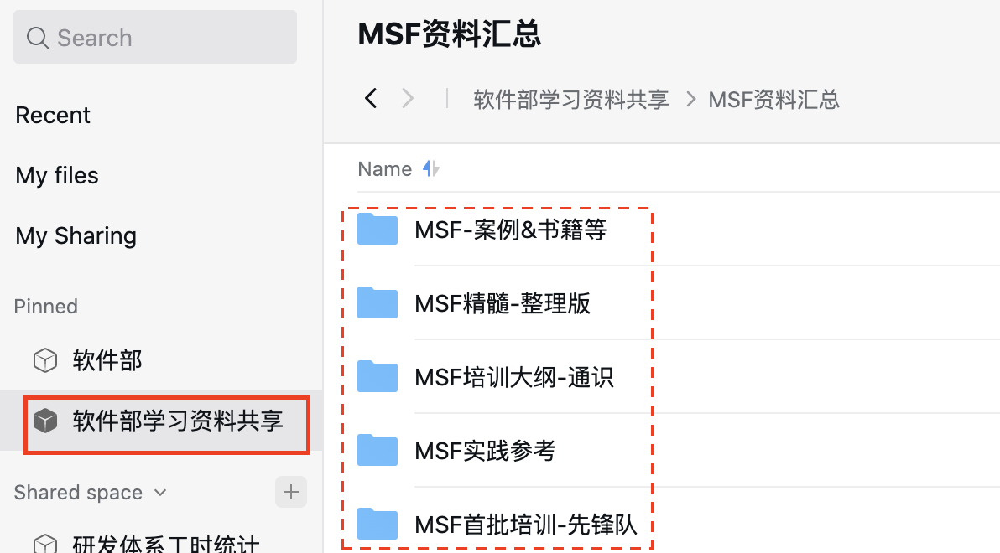

MSF团队必读
引言
目的
2022年内网研发团队将使用MSF开发模型，团队内部需要深入学习MSF，前期软件部组织了首批MSF先锋队学习培训，且部分成员目前已经参与到项目实践中，在此过程中积累了相关的自学、培训和实践经验，本文档基于这些经验，进行复盘总结，形成MSF学习指南，希望可以在大家学习过程中给予引导，能够达到快速学习掌握MSF精髓，并能够结合产品项目特点落实到实践中。
阅读者及阅读建议
本文档为参与或将要参与MSF项目的团队角色，包括产品管理、程序管理、架构设计师、开发工程师、测试工程师、UE角色。
初学者可以按照书籍阅读、MSF培训大纲、制度规范&MSF指导书等循序渐进进行学习，也可以根据自身情况进行调整。
书籍阅读，帮助你系统理解MSF框架，很必要，可以避免在工作中被忽悠，当然get多少知识因人而异。参考《MSF精髓》阅读建议，https://drive.weixin.qq.com/s?k=AKUAEQfRAAw5zTh5ou
MSF培训大纲-通识，快速get MSF框架知识。
制度规范&MSF指导书，开展项目实践必读，涉及相关输出及要求，评审范围。
范围
本文主要从培训大纲&资料、制度规范文档、学习实践指导书等方面，提供可以循序渐进的知识库，让MSF团队的各个角色能够快速掌握MSF。
资料仓库
学习&培训资料
企业微信微盘：/软件部学习资料共享/MSF资料汇总

- MSF精髓-整理版，MSF先锋队员根据MSF书籍整理的，方便大家进行检索。
- MSF培训大纲-通识，快速了解MSF原则、团队模型和历程。
- MSF首批培训-先锋队，先锋队培训学习计划、阶段性学习总结。
- MSF实践参考，MSF内部项目实践的一些文档，有些已经发布在github.io上。
- MSF 案例&书籍等，MSF实践的一些书籍及案例，比如《移山之道》等。
制度规范文件&指导书
文档都在github上，欢迎有问题直接在线编辑。目前包括研发管理制度、研发文档编写指南、UI设计规范三大块内容，本文档涉及到的制度规范都在研发管理制度里面。
发布链接：https://weihong-phoenix.github.io/
重点知识
MSF框架包括 两个模型、三个准则、五大历程、七个代言群。
两个模型，团队模型、过程模型。
三个准则，项目管理准则、风险管理准则、就绪管理准则
五大历程，展望历程、计划历程、构建历程、稳定历程、部署历程
七个代言群，产品管理、程序管理、架构设计、开发、测试、UE和发布/运维
制度规范&实践指导
资产库管理
该文档定义了MSF项目的资产代码库目录结构、文件管理规范。
文档路径：软件项目目录与文件管理规范
文档编写规范
该文档定义了研发技术文档编写的基本规范。
文档路径：研发文档编写规范
实践指导
该文档定义了平台和产线开展MSF项目展望和计划各个历程的关键活动、输出及评审要求。
文档路径：MSF详细活动指导
FAQ
学习、培训及实践中遇到的常见问题、建议解决方案或最佳实践等，供大家参考，如果你有问题和建议，也请及时反馈更新。
MSF框架类
Q：为啥有团队模型呢？
A：团队模型主要是基于专业能力及代言的立场决定的。 团队中有些角色是可以合并， 但有些不行， 具体见《微软研发软件的奥秘：MSF精髓》4.2章节。
Q：能否通俗一点讲清五大历程及管理历程所关心的事？
A：众所周知， 软件研发领域越到研发后期发现的问题， 修复的代价越高， 往往都是指数级的差异。 开发人员最讨厌的事情之一就是需求又变了。 这往往就是前期的工作没了解清楚，过程模型就是希望强调在前期多做些这类工作， 使后期的变化在一定范围内。
- 管理历程
该MSF解决方案的前期调研， 并发起项目。 指导团队完成五大历程的活动；通过优化流程， 团队组织， 持续提升团队的能力和效率，改进解决方案的质量与流程，使其达到最佳状态。
- 展望历程
解决的主要问题是， 这个产品主要满足什么样的需求， 团队大概用什么样的产品满足该需求， 从而判断是否值得投入研发。这可能主要要明确产品要做什么， 投入大概多大， 产出可能有多大， 但这些问题其实都很难回答， 判断基本上需要靠团队， 能否说服公司高层对该产品的投入。
- 计划历程
对产品功能进行细化， 列出产品功能的主要技术困难点， 并形成方案； 然后列出开发计划， 预估可能会有的风险。
- 构建历程
主要是实现解决方案， 并给出对应的测试用例。
- 稳定历程
测试及验收。
- 部署历程
汇总版本发布记录， 并发布软件。
Important
注意：每个历程是可以重叠的， 而不是阶段性的。
Q：远景/范围文件里面的假设是什么?
A:需要团队研发人员引起重视的、敏感的约束，模板为通用的模板，如果某些项目该部分确实没 有，可以写"无"。有些是前期未能够识别的，可以先标注TBD，后期遇到问题再补充。
Q:远景范围里面需要描述的风险和风险文件里面需要描述的风险是否有重复?
A:远景/范围里面的风险可以不写。
Q： 设立一个MSF团队的标准或评估维度有哪些呀？
A：
- 一个产品型号，一个MSF团队 原则上一个产品一个仓库，如果多个产品共用一个仓库的，其实可以作为一个MSF团队管理
- 至少需要3个全职的角色来完成 根据项目的复杂度、时间跨度、迭代周期 综合考虑是否需要组件一个MSF团队，如果这件事情只是某一个或者两个角色的工作，不需要组件团队，把这个事情当成任务安排到MSF团队或者是MSF之外的功能团队。
- 除去MSF团队，也应该有些功能团队
资产管理类
Q：仓库中的doc\srs下的目录大纲如何组织？
A：目前该问题是在实践团队中碰到较多问题， 团队首先需要规划该srs的目录大纲， 再细化对应的md文件。
文档编写类
Q：项目的约束条件和产品的约束条件的差别？
A：项目的约束条件一般从时间、资源和质量目标等方面进行约束。 产品的约束条件一般从操作系统、硬件、网络通信及其协议、质量特性需求、法规政策等方面的局限。
Q:SRS写到什么程度好?
A:可以参考以下基本原则:
如果设计与开发人员需要SRS的作者额外的解释才能理解需求并进行设计和实现，则需要在SRS里面进行细化。
如果测试人员需要SRS的作者额外的解释才能理解需求并进行测试用例的设计，则需要在SRS 里面进行细化。
其它的想法，仅供参考：
SRS虽然是国标，是规范，是模板。其实提供了一种思路帮助大家去梳理如何把一个产品级的需求描述清楚，确实能够在研发过程中指导大家，减少不必要的沟通。我们是做产品的，不是短期的项目，文档是比较重要的资产，并且我们的很多产品，相似度比较高，好的SRS增强了复用性，长期来看提高了效率。
SRS其实是【需求分析】之后的输出，任何需求如果没有经过需求分析而直接实践，后期出现实现的功能和用户需要的不同，设计方案评审时发现原来是需求不合理，甚至测试的时候发现是需求问题等等，其实也是变相的在降低效率。既然是分析工作，那肯定需要掌握的知识技能比较多，所以开始觉得难，觉得无从下手，个人感觉都比较正常，多看看优秀的案例。
SRS中的功能需求规格部分，重点关注业务逻辑，如果想把业务逻辑描述清楚，文字能力有限，则用原型图。
SRS的编写有一定的方法论，但是关键的还是要站在阅读者的角度去思考如何编写，可能需要大家在实践中慢慢总结和萃取经验。
Q:SRS里面的需要呈现什么样的用户界面？或者说用户界面设计到哪种程度才可以在SRS中呈现？
A:如果该用户界面不是用户直接提出或者经过充分分析确定的最终界面，不要在SRS里面呈现，或者批注下，最好是先描述为用户故事。 （用户最终界面某种程度上属于设计之后到产出。基本经历3个步骤：1-先描述用户故事 2-再画原型图 3-最后设计最终的用户界面）
Q：项目的约束条件和产品的约束条件的差别
A：项目的约束条件一般从时间、资源和质量目标等方面进行约束。产品的约束条件一般从操作系统、硬件、网络通信及其协议、质量特性需求、法规政策等方面的局限
Q：SRS和用户手册感觉很像？写了SRS还需要用户手册吗？
A：
- 阅读对象不同。SRS面向的是研发团队的开发和测试、客户（甲方）或者用户。而用户手册【帮助手册/操作说明书】，面向的是使用者，对象不同。
- 描述的专业性不同。SRS因为面向研发团队，有一定的专业性，比如描述输入可能用到数据类型，会描述用户比较难看到的异常场景等。用户手册一定要用用户看得懂的语言描述。
- 作用不同。SRS是整个开发的依据，可以对后期的开发工作起指导作用，是项目计划、验收的依据。也是《用户手册》的依据。《用户手册》是指导用户快速入门，告诉使用者我们有哪些功能，如何使用等。
Q:用户故事、功能规格、SRS之间的关系？
A:
- 用户故事的描述体现功能的使用角色、能力和价值。
- 功能规格说明书在描述具体的功能时，功能的概述其实是描述的该功能具备的能力。
- 功能规格说明书，只是SRS文档里面的子集。 用户故事可以在三个地方进行使用：
- 1.产品远景文件里面（README.md）描述高层需求。
- 2.SRS里面的第二章节 总体描述-产品功能描述。
- 3.功能规格说明书中的功能概述部分。 1.2.3.几乎是层层分解，逐步细化的过程。
Q：功能规格说明书到底写到什么程度才算达标？ A：
- 和平台两个资深开发沟通，如果提供的SRS给研发团队可以提供80%需要的信息，则这个文档在当前就是成功的，另外的20%可以在渐进明细的过程中获取到。但是反之，如果你只提供了20%的信息，另外的80%需要通过口头不断的沟通，甚至到最后测试的时候发现软件有问题，或者发布后用户反馈不符合需求，那绝对是失败的，不如把后期浪费的时间放在前期。
- 重点是能够把功能描述清楚，确实可以指导后续的开发、测试、程序管理、UE进行相关的实现、测试计划和用例、项目计划和用户手册的编写。这个完善是个层层递进的工作。建议是计划阶段可以把业务逻辑描述清楚，构建阶段不断优化，确保满足研发团队不同角色的需求。
Important
注意:1. 如果需要产品甲方查询的信息，可以写在SRS里面。2. 需求不能够侵入设计领域。
Q:功能描述以什么形式进行定义，无法写的和SRS模板一样?
A:功能需求描述可以采用Use Case、IPO(模板里面用的这个模型)或者其它规范化的模型进行 描述，比如实体-关系图(一般有数据库相关的系统采用)、状态转换图、数据流图、对话图 等。一般涉及到用户操作的功能采用Use Case，API相关的用IPO较多。